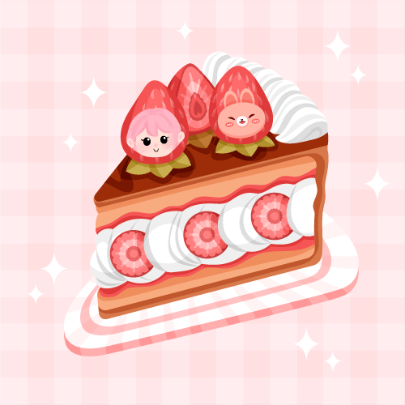

Alegre, siempre optimista, dulce como su nombre.
Dulce Fresa y Tarta de Mora fueron las mejores amigas en su infancia, compartían risas y secretos en el jardín del taller. Sin embargo, un malentendido durante una fiesta cambió todo. Tarta de Mora se sintió traicionada por algo que Dulce Fresa dijo sin pensar, y desde ese momento dejaron de hablarse. El "pañuelo rojo" en su muñeca izquierda es un recordatorio de un día especial en el que ambas prometieron mantenerse unidas, pero esa promesa nunca se cumplió.
¿El secreto? La pelea se originó por un malentendido sobre un comentario que Dulce Fresa hizo en la fiesta, pero lo que Tarta de Mora nunca supo es que Dulce Fresa intentó disculparse en secreto, sin éxito. El pañuelo rojo representa la última vez que ambas intentaron reconciliarse. ¿Podrán reconciliarse algún día?
La historia de las muñecas de Taffy Tots no es solo un relato de amistad y secretos rotos, sino también de una conexión mágica que une a todas las muñecas, algo que ellas mismas desconocen por completo. Cada una de ellas, aunque parece tener su propio destino, está conectada por una energía mágica antigua que reside en el taller donde fueron creadas. Esta magia, relacionada con los pasteles y la dulzura de sus sabores, es más poderosa de lo que parece, y todo comenzó hace mucho tiempo, cuando el primer pastel fue horneado.